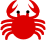

What's my crab?
An experimental guide to help identify New Zealand crabs
To identify your crab answer the below questions; that will filter the crabs shown in the list.
As you answer a question other questions may appear.
You can click the to view more details of a crab, or select multiple crabs using then use to compare them.
- You can click the icon for more help with each question.
- You can select multiple answers for each question; for example if for the shape of the shell question you select both the round and square options then all round and square shaped crabs will show.
- If you're unsure of the answer or a question doesn't apply you don't have to answer anything for it, or you can hide it.
- When you're looking at a crab's details (after using ) you can click the to see the full sized images.
(ignored)
help
help
hide this question